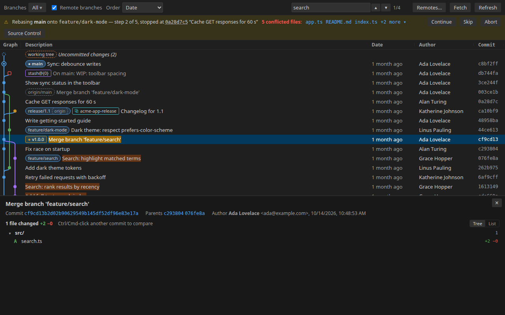

Resolve git merge conflicts in VS Code
A merge conflict means two branches changed the same lines, and git will not guess which version you want. It writes both into the file, stops, and leaves the decision to you. This guide shows how to find the conflicted files, read the markers, resolve them with VS Code’s inline buttons or its three-way merge editor, take one side of a whole file from the command line, and finish or cancel the merge. The same steps apply when a rebase, cherry-pick or revert stops on a conflict.
Quick answers
| I want to… | Run |
|---|---|
| List only the conflicted files | git diff --name-only --diff-filter=U |
| Keep my branch’s version of a file (in a merge) | git checkout --ours <file>, then git add <file> |
| Keep the other branch’s version (in a merge) | git checkout --theirs <file>, then git add <file> |
| Start a file over with the markers back | git checkout -m <file> |
| Also see the original lines in the markers | git config --global merge.conflictStyle zdiff3 |
| Mark a file as resolved | git add <file> |
| Finish the merge | git merge --continue (or git commit) |
| Cancel the merge | git merge --abort |
| Finish a rebase step instead | git rebase --continue |
Find the conflicted files
git merge feature Auto-merging config.yml CONFLICT (content): Merge conflict in config.yml Auto-merging notes.txt CONFLICT (content): Merge conflict in notes.txt Automatic merge failed; fix conflicts and then commit the result.
Files git could combine on its own are already staged. The rest are unmerged. git status lists them under Unmerged paths as both modified (or deleted by them and similar when one side deleted the file). For just the names, which is handy in scripts or with many files:
git diff --name-only --diff-filter=U config.yml notes.txt
In VS Code the same files appear in the Source Control view in a group called Merge Changes.
Read the conflict markers
Inside each conflicted file, git marks every block it could not combine:
title: Report <<<<<<< HEAD color: red ======= color: green >>>>>>> feature size: 10
The part between <<<<<<< HEAD and ======= is what your checked-out branch has. The part down to >>>>>>> feature is what the branch you are merging in has. Lines outside the markers merged cleanly. To resolve, edit the block into the text you want (one side, the other, or a mix) and delete all three marker lines.
Often you cannot decide without knowing what the line was before either branch changed it. Set the zdiff3 style and git adds that original between ||||||| and =======:
git config --global merge.conflictStyle zdiff3 <<<<<<< HEAD color: red ||||||| 824d4dd color: blue ======= color: green >>>>>>> feature
Now it is clear that both sides changed blue, each to something different. The setting affects conflicts from then on. For a file that is already conflicted, git checkout --conflict=zdiff3 <file> rewrites its markers in this style (labelled ours, base and theirs), discarding any edits you made to it. diff3 is the older variant of the same idea.
Resolve inline in VS Code
Open a conflicted file from Merge Changes and VS Code colours the two sides and puts a row of actions above each block:
- Accept Current Change keeps the
HEADside. - Accept Incoming Change keeps the side being merged in.
- Accept Both Changes keeps both, one after the other.
- Compare Changes opens the two sides as a diff.
Each one rewrites the block and removes its markers. For a file with many blocks, the Command Palette has Merge Conflict: Accept All Current, Accept All Incoming and Accept All Both, and Next Conflict / Previous Conflict to move between blocks. You can always ignore the buttons and edit the text by hand instead.
The 3-way merge editor
When a conflicted file is open, a Resolve in Merge Editor button appears in the editor. It opens a view with the two sides, labelled Incoming and Current, next to each other and the Result below. Each conflict in the side panes has actions to accept that side, and Accept Combination takes both. You can also type in the Result pane directly.
When you are done, click Complete Merge. VS Code saves the result, stages the file (the same as git add) and switches to the Source Control view. If the file still has conflicts you have not handled, it asks first. To open conflicted files in the merge editor straight away, turn on the setting git.mergeEditor (it is off by default).
Take one side for a whole file: --ours and --theirs
Sometimes one version of a file is simply right, for example a generated lock file you will regenerate anyway. Instead of handling every block:
git checkout --ours notes.txt # the version on the branch you are on git checkout --theirs notes.txt # the version from the branch being merged in git add notes.txt
git restore --ours and git restore --theirs do the same. Either way the file stays unmerged until you git add it, so you can look before committing to the choice. Only take a whole side when you are sure: any change the other side made to that file is dropped.
Git keeps all three versions of a conflicted file while it is unmerged, and you can print any of them: git show :1:<file> is the common ancestor, :2: is ours and :3: is theirs. If a resolution went wrong, git checkout -m <file> puts the conflict markers back so you can start that file again. It works even after you have staged the file, as long as the merge has not been committed yet. Once staged, --ours and --theirs no longer change the file, so use checkout -m first.
Ours and theirs flip during a rebase
A rebase replays your commits on top of the other branch. So while it runs, HEAD is the other branch (plus whichever of your commits have been replayed so far), and the commit being applied is yours. Everything that means “my side” in a merge means the opposite here:
| Name | In git merge feature (on main) | In git rebase main (on feature) |
|---|---|---|
--ours, top of the markers, VS Code’s “Current” | main, the branch you are on | main, the branch you are rebasing onto |
--theirs, bottom of the markers, VS Code’s “Incoming” | feature, the branch merged in | Your own commit on feature being replayed |
The marker line shows which commit is being replayed, for example >>>>>>> 853bf79 (Use green). So to keep your own version of a file during a rebase, run git checkout --theirs <file>. A cherry-pick and a revert behave like a merge here: ours is your current branch, and theirs is the change being applied.
Stage, then continue or abort
Saving a file does not tell git anything. Staging it does: git add <file>, or the + next to it in Source Control. Search for <<<<<<< before you stage, because git will accept a file that still contains markers. When git diff --name-only --diff-filter=U prints nothing, finish:
git merge --continue # or git commit; both create the merge commit git merge --abort # or give up and go back to before the merge
If any file is still unmerged, both refuse with Committing is not possible because you have unmerged files. git merge --continue opens your editor with a prepared message (Merge branch 'feature'); prefix the command with GIT_EDITOR=true to accept it without the editor. git merge --abort restores your branch and files to how they were before the merge; untracked files are left alone. In VS Code, the Commit button in Source Control finishes the merge, and Git: Abort Merge in the Command Palette cancels it.
For a rebase, the commands are git rebase --continue and git rebase --abort, and there is also --skip; a rebase can stop again at a later commit. During a rebase the Source Control commit button reads Continue. The guide to a stopped rebase, merge or cherry-pick covers continue, skip and abort for every operation, how to avoid the editor, empty commits, and undoing a finished one with ORIG_HEAD.
Do it in Mergeline
Mergeline shows a bar above the graph whenever a merge, rebase, cherry-pick or revert has stopped, whether you started it from the graph or from a terminal, for example Merging feature into main or Rebasing … step 2 of 3.
- See the files. From Mergeline 0.10 the bar lists the conflicted files, so you do not need
git status. - Open one. Click a file name and it opens in VS Code’s merge editor (or as a plain file, with the inline actions, if the merge editor cannot open it). Resolve it as described above; Complete Merge stages it. The Source Control button in the bar opens the full list there.
- Continue. When every file is resolved and staged, click Continue in the bar. For a rebase that stops again at a later commit, the bar moves on to that step.
- Or skip or abort. Skip leaves out the commit that stopped (not shown for merges). Abort cancels the whole operation and puts everything back.

What each button runs, and what it checks first, is in the stopped-rebase guide. To avoid conflicts in the first place, see rebase vs merge; to bring in a single commit, cherry-pick.
Mergeline is not on the VS Code Marketplace yet. Download the .vsix from GitHub and run Extensions: Install from VSIX… (full steps).